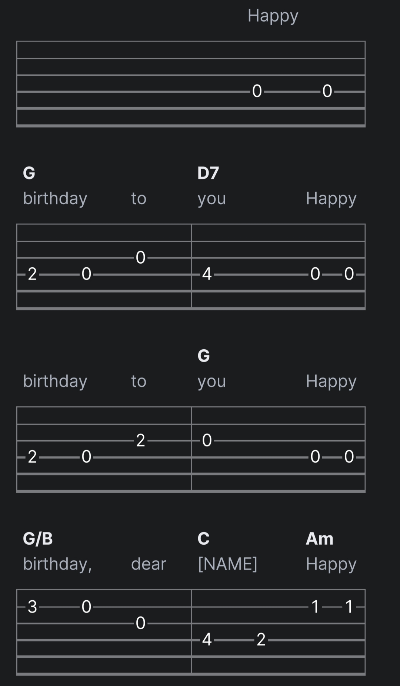
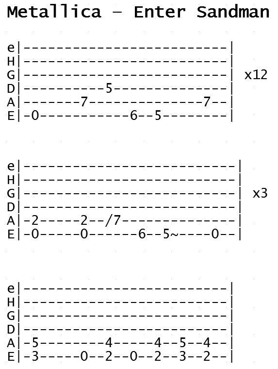
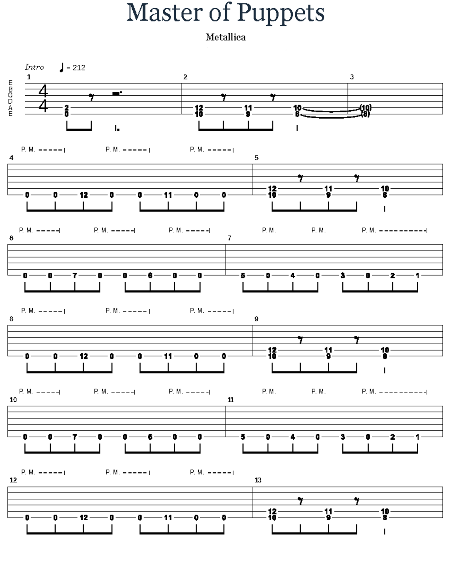

TABULATURY
Twoje miejsce do nauki utworów!
HAPPY BIRTHDAY
Strojenie klasyczne: E A D G B E
POZIOM TRUDNOŚCI: ŁATWY
Tabulatura – część 1

Tabulatura – część 2

CHIVAS NOWYBATMAN
Strojenie klasyczne: E A D G B E
ŁATWY / ŚREDNI
Tabulatura – część 1

Tabulatura – część 2

ENTER SANDMAN – METALLICA
Strojenie: E A D G B E (standardowe)
TRUDNY / ŚREDNI

MASTER OF PUPPETS – METALLICA
Strojenie klasyczne: E A D G B E
POZIOM TRUDNOŚCI: TRUDNY
Tabulatura – Master of Puppets
